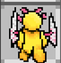
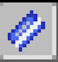

The aim of the game is to get from the starting position to the end of each level. This is done by collecting keys and other resources that can be used to move around the map. Each level has a timer. You must complete the level before the timer runs out, or you will lose.
Use the arrow keys or click on the on-screen arrows to move the character around the board.
Enemies patrol parts of the board on set routes. If you hit one of these enemies, they will kill you, so watch out!

In some places on the station, you may come across some vents.
These vents allow you to travel to an otherwise inaccessible location.
There are multiple colour variations of these, and they allow the character to open doors of the corresponding colour.
There are multiple variations of these, and they will give you different abilities based on their colour.
This potion will allow you to swim through bodies of water.
This potion will allow you to freely walk across ice without sliding.
This potion will make you immune to lava.
To save the game, click on the save option in the top menu.
To load a saved game, click on the load option in the top menu.
You can save a replay at any time by clicking on the save option in the replays menu.
You can load a replay at any time by clicking on the load option in the replays menu.
You can control the replay by using the on screen controls (at the bottom).
The play button (left most button) starts and resumes the replay.
The pause button (second from the left) pauses the replay.
The step button (second from the right) allows you to move through the replay step by step.
The speed button (right most button) allows you to adjust the speed of the replay.
There are several keyboard shortcuts that you can use: